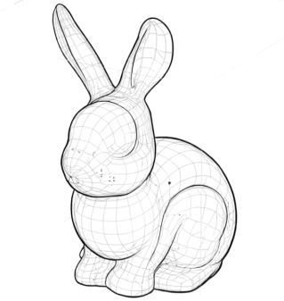
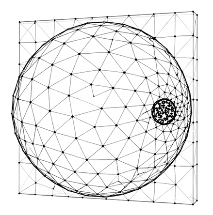
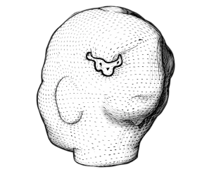

WHAT WE STUDY
Research Areas
Our research explores the mechanics of soft and biological materials, with an emphasis on understanding how these systems grow, remodel, fail and heal under complex mechanical and biological conditions.
Mechanics of tissue growth
Skin mechanobiology
Skin is a living tissue, its ability to adapt to extreme conditions has lead to tissue expansion, a widely used technique in reconstructive surgery that grows skin in vivo to correct large defects. Applying the theory of finite growth we can model tissue expansion within a continuum mechanics framework.
Wound repair dynamics
SciML: Solid Mechanics
Achieving perfect skin regeneration after wounding remains challenging because of the lack of fundamental understanding of the precise interplay among different cell types, complex cell signaling networks and mechanical feedback loops. We develop new theoretical and numerical tools to study the spatiotemporal dynamics of this system across scales.

Computational surgery mechanics
Breast Cancer Biomechanics
Mechanical loading plays a crucial role in chronic and acute tissue response to excessive loads, including damage, rupture, and pathological growth and remodeling. However, despite this knowledge, surgical procedures have rarely been looked at from from a structural point of view before. We use computational mechanics to improve reconstructive surgery.

Multiscale numerical modeling
Digital Twins for Biomedical Systems
Computational modeling of biological tissues and soft matter requires new computational tools. Current shell formulations are mainly focused on linear isotropic materials, while soft and biological materials are characterized by nonlinear anisotropic stress-strain response and large deformations. In addition, biological tissues have the ability to growth and remodel.
